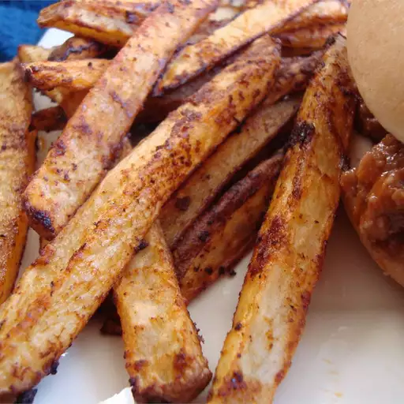

French Fries

Description
These French fries are very easy to make, and a great way to kick up your burger platter.
- Prep Time: 10 mins
- Cook Time: 40 mins
- Total Time: 50 mins
- Servings: 4
Ingredients
- 4 large russet potatoes, peeled and cut into 1/4-inch-thick fries
- ¼ cup vegetable oil
- ¼ cup tomato-vegetable juice cocktail
- 1 tablespoon chili powder
- 2 teaspoons dried onion granules
- 1 teaspoon ground cumin
- 1 teaspoon garlic powder
- 1 teaspoon cayenne pepper
- 1 teaspoon white sugar
- 1 tablespoon salt
Steps
- Preheat the oven to 375 degrees F (190 degrees C). Grease a large baking sheet.
- Fill a large bowl with cold water; add potatoes and soak 10 minutes.
- Whisk oil, vegetable juice cocktail, chili powder, onion granules, ground cumin, garlic powder, cayenne pepper, sugar, and salt together in a large bowl.
- Drain potatoes and pat dry with paper towels; toss with oil mixture until evenly coated. Arrange fries in a single layer on the prepared baking sheet.
- Bake in the preheated oven for 20 minutes; flip fries. Continue baking until browned and crispy, about 20 minutes more.
Home